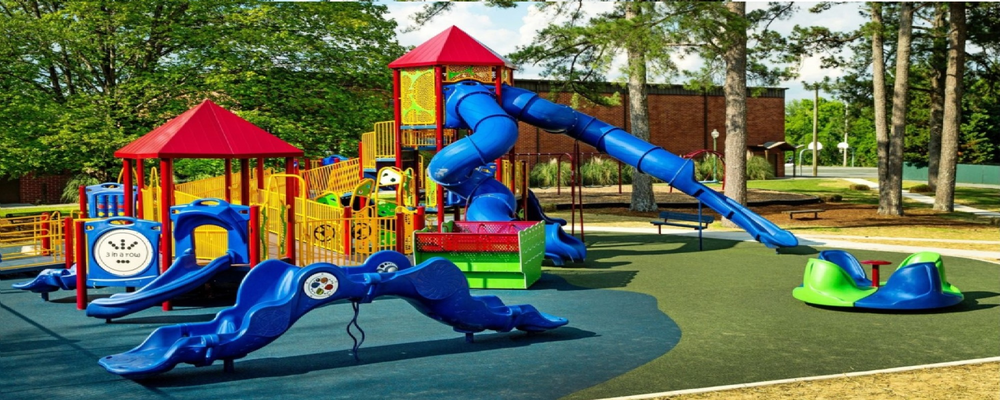
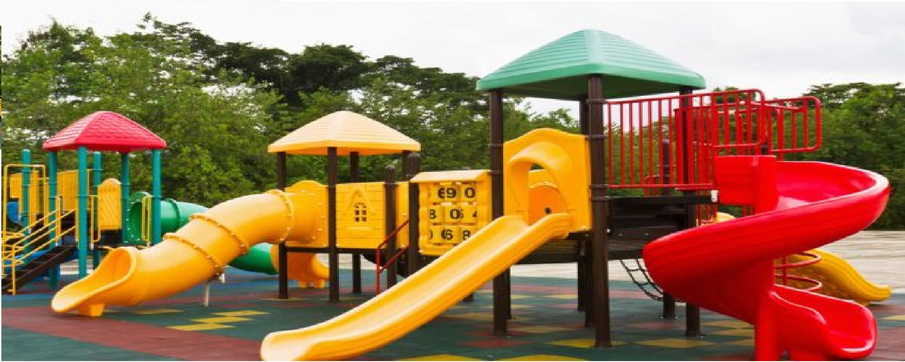

1 / 3

Caption Text
2 / 3

Caption Two
3 / 3

Caption Three
Footsteps Day Nurseries are a small nursery chain with a big vision. For our youngest children our emphasis is on providing a caring and nurturing environment supporting our children and their families to help them flourish. For our older children our emphasis is on learning through play in a structured but responsive environment with well planned activities supporting their learning and ensuring they are ready to take their next steps.
Like most nurseries, we provide care and education using the Early Years Foundation Stage (EYFS) as set out by the Department for Education. We carry out activities in each of the 7 areas of learning that suit the children’s age and stage of development to ensure that we are supporting them to progress in their emotional, intellectual and physical development.
We believe that children learn best in the outdoors and we use the garden and our nursery allotment as much as we can. We also have a close relationship with Lambourne End outdoor centre in Chigwell Row where the children regularly visit the horticultural project and farm. Through our activities in the nursery garden, our allotment and our partnership with Lambourne End we help the children start to understand the world around them and where food comes from. This approach continues to our nursery meals, all our meals are made up almost entirely of food prepared from scratch on the nursery premises from fresh ingredients. Where possible we include food that the children have harvested such as herbs and vegetables so they can really make the connection between the land and the plate.
Our vision is a holistic approach to childcare ensuring that we meet the needs of the children and families that attend our settings and surpass your expectations. We do this with robust policies and procedures, highly trained staff and a sympathetic and responsive team who believe that a dedication to the children and partnership with our parents is the only way to deliver truly great childcare.